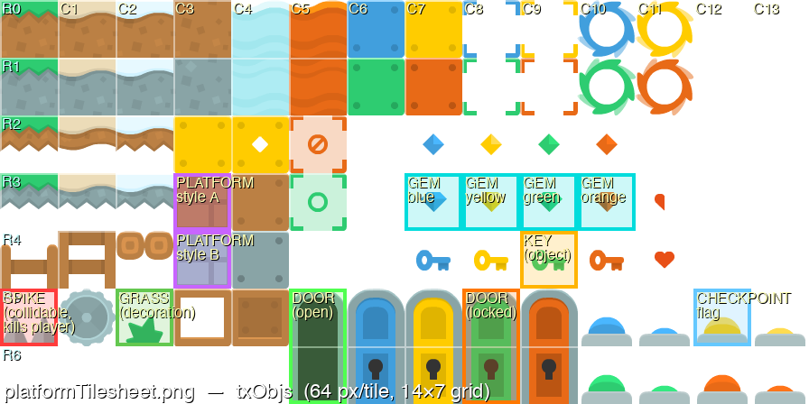
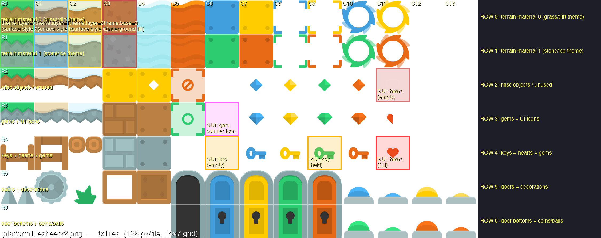
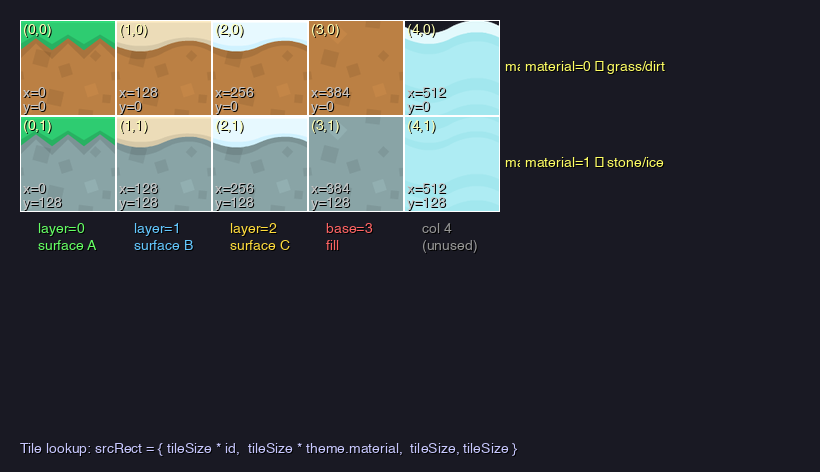
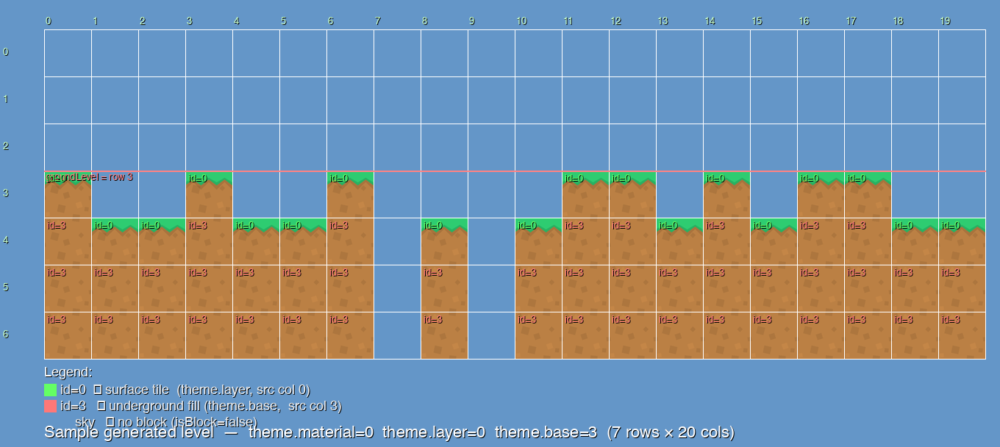

Tilemap System — Two Approaches
1. Overview — The Spritesheet Technique
A spritesheet (also called a texture atlas or tilesheet) packs many individual sprites into a single image arranged on a regular grid. Instead of loading hundreds of files, you load one texture and use source rectangles to cut out exactly the portion you need when drawing.
┌─────────────────────────────────────┐
│ spritesheet.png │
│ ┌──────┬──────┬──────┬──────┐ │
│ │ tile │ tile │ tile │ tile │ row 0│
│ ├──────┼──────┼──────┼──────┤ │
│ │ tile │ tile │ tile │ tile │ row 1│
│ └──────┴──────┴──────┴──────┘ │
│ col0 col1 col2 col3 │
└─────────────────────────────────────┘
// To draw the tile at (col=2, row=1):
srcRect.x = col * tileSize = 2 * 64 = 128
srcRect.y = row * tileSize = 1 * 64 = 64
srcRect.w = tileSize = 64
srcRect.h = tileSize = 64The whole game world is a 2D grid of integers. Each integer identifies a tile in the spritesheet. The two approaches in this document differ in where those integers come from: hand-authored in an editor, or generated in code.
2. The Two Approaches at a Glance
| Aspect | Tiled JSON (Main) | Procedural (Appendix) |
|---|---|---|
| Source of truth | .tmj file from Tiled | Algorithm in code |
| Tile identifier | GID — flat int in layer.data[] | (theme.layer, theme.material) per cell |
| Variation strategy | Multiple .tmj files / tilesets | Swap a few theme ints |
| Object placement | Drag-and-drop → objectgroup | placeObjects() algorithm |
| Collision | checkCollisionTiledLayer(...) | tileMap[row][col].isBlock |
| Animated tiles | Built in via tileset animation | Roll your own |
| Tile flip / rotation | Top 3 bits of GID, handled by the lib | Roll your own |
| Best for | Hand-crafted platformers, puzzles | Roguelikes, infinite worlds |
| Example in this repo | examples/tiled/tiled_map.js | C++ platformer-raylib (sibling project) |
data[]. They share §3 and §4 entirely.
3. The Core Primitive — DrawTextureRec
Every tile in both approaches is ultimately drawn with the same raylib function:
void DrawTextureRec(
Texture2D texture, // the loaded spritesheet GPU texture
Rectangle source, // region to cut from the sheet (in pixels)
Vector2 position, // where to draw it in world/screen space
Color tint // colour multiplier — WHITE = no tint
);In rayjs this is exposed verbatim from rayjs:raylib:
import { DrawTextureRec, Rectangle, Vector2, WHITE } from "rayjs:raylib"
DrawTextureRec(
tileset.texture,
new Rectangle(srcX, srcY, tileW, tileH),
new Vector2(dstX, dstY),
WHITE,
)That single function backs the inner loop of drawTiledMap in lib/tiled.js (Tiled approach) and the inner loop of drawTileMap in Platformer2D.cpp (procedural approach). The difference is only in how srcX/srcY get computed: from a GID lookup, or from theme.layer * tileSize arithmetic.
4. The Spritesheets
The rayjs example and the C++ project share artwork from the same two-file family:
| File | Tile size | Grid | Used by |
|---|---|---|---|
examples/platformTilesheet.png |
64 × 64 px | 14 × 7 | rayjs Tiled example (txObjs in C++) |
platformTilesheetx2.png |
128 × 128 px | 14 × 7 | C++ terrain (txTiles) |
camera.zoom = 0.5, so the 128 px texels stay crisp at half scale. The rayjs example uses the 64 px sheet at native zoom (zoom = 1).
platformTilesheet.png — the sheet the Tiled example uses

examples/tiled/resources/map.tmj. Every tile in the map — ground, gems, platforms, door, key — is a 64×64 cut from this sheet.platformTilesheetx2.png — the C++ terrain sheet

5. The .tmj File Format
A .tmj file is plain JSON exported by the Tiled editor. It fully describes a level: map dimensions, layers (tile and object), tilesets, and per-tile metadata. The rayjs example loads one and renders it with rayjs:ext:tiled.
5.1 Anatomy of examples/tiled/resources/map.tmj
Here is the entire map file used by the rayjs example, annotated inline:
{
// ── map header ─────────────────────────────────────────────
"width": 20, // 20 tiles wide
"height": 10, // 10 tiles tall
"tilewidth": 64, // each tile is 64×64 px in this map's grid
"tileheight": 64,
"orientation": "orthogonal",
"renderorder": "right-down",
"infinite": false,
// ── layers (drawn in array order) ──────────────────────────
"layers": [
{
// Tile layer — a 20×10 flat array of GIDs
"id": 1,
"name": "Ground",
"type": "tilelayer",
"width": 20,
"height": 10,
"visible": true,
"opacity": 1,
"x": 0, "y": 0,
"data": [
// Row 0 — a few clouds and a small floating platform
3, 12, 9, 10, 0, 0, 0, 0, 8, 8, 8, 0, 0, 0, 0, 0, 0, 0, 0, 0,
// Rows 1–3 — empty sky
0, 0, ... 0,
0, 0, ... 0,
0, 0, ... 0,
// Row 4 — floating ledge
0, 0, 0, 0, 0, 2, 3, 4, 0, ...
// Row 5 — another floating ledge
0, 0, 0, 0, 0, 0, 0, 0, 0, 0, 0, 2, 3, 4, ...
// Row 6 — empty
0, 0, ... 0,
// Row 7 — full ground row (surface caps)
1, 2, 3, 4, 5, 6, 7, 8, 9, 10, 11, 12, 1, 2, 3, ...
// Row 8 — underground fill row 1
13, 14, 15, 16, 17, 18, 19, 20, 21, 22, 23, 24, ...
// Row 9 — underground fill row 2 (bottom)
25, 26, 27, 28, 29, 30, 31, 32, 33, 34, 35, 36, ...
]
},
{
// Object layer — annotations with positions & types
"id": 2,
"name": "Objects",
"type": "objectgroup",
"visible": true,
"opacity": 1,
"draworder": "topdown",
"objects": [
{
"id": 1, "name": "Player", "type": "spawn",
"x": 64, "y": 320, // pixel position in world space
"width": 64, "height": 64,
"rotation": 0, "visible": true
},
{
"id": 2, "name": "Coin", "type": "pickup",
"x": 320, "y": 192,
"width": 64, "height": 64,
"rotation": 0, "visible": true
}
]
}
],
// ── tilesets used by the map ───────────────────────────────
"tilesets": [
{
"firstgid": 1, // GIDs in data[] are offset by this value
"name": "platformTilesheet",
"image": "../../../examples/platformTilesheet.png",
"imagewidth": 896,
"imageheight": 448,
"tilewidth": 64, // size of one tile in the source image
"tileheight": 64,
"columns": 12, // tiles per row to use from the image
"tilecount": 60, // 12 cols × 5 rows = 60 tiles indexed
"margin": 0,
"spacing": 0
}
]
}A few things worth noticing:
data[]is row-major. The cell at(col, row)lives atdata[row * width + col].0means empty. Any other value is a GID (see §5.2).- Image dimensions can exceed the tileset's indexable region. The image is 896×448 (14×7 tiles) but the tileset is configured with
columns: 12andtilecount: 60, so it exposes only the first 12 cols × 5 rows. - Object positions are in pixels, not tile units.
x: 64, y: 320means the Player spawn is one tile from the left and five tiles down.
5.2 GIDs — How an Integer Encodes (Tileset, Col, Row, Flip)
Each entry in data[] is a GID (global tile ID) — a 32-bit integer that packs four pieces of information:
31 30 29 28 0
┌──┬──┬──┬──────────────┐
│ H│ V│ D│ tile gid │
└──┴──┴──┴──────────────┘
└──┬──┘ └──────┬────┘
flip bits 29-bit tile identifier| Bit | Mask | Meaning |
|---|---|---|
| 31 | 0x80000000 | FLIP_H — horizontal flip |
| 30 | 0x40000000 | FLIP_V — vertical flip |
| 29 | 0x20000000 | FLIP_D — diagonal (combined with H/V encodes 90° rotations) |
Resolving a GID to a source rectangle
gid = rawGid & 0x1FFFFFFF // strip flip bits
ts = tileset whose firstgid is the highest value ≤ gid
localId = gid - ts.firstgid // 0-based index within that tileset
col = localId % ts.columns
row = floor(localId / ts.columns)
srcX = ts.margin + col * (ts.tilewidth + ts.spacing)
srcY = ts.margin + row * (ts.tileheight + ts.spacing)This is exactly what _drawTileLayer does in lib/tiled.js (lines 290–294).
🔢 Interactive — type a GID, see it decoded
Using the example map's tileset: firstgid=1, columns=12, tilewidth=64, tileheight=64, margin=0, spacing=0.
Click any tile on the spritesheet below, type a GID, or toggle flip bits.
Worked examples (using the map's tileset)
| Raw GID | Strip flip | localId | col | row | srcX | srcY |
|---|---|---|---|---|---|---|
| 1 | 1 | 0 | 0 | 0 | 0 | 0 |
| 12 | 12 | 11 | 11 | 0 | 704 | 0 |
| 13 | 13 | 12 | 0 | 1 | 0 | 64 |
| 36 | 36 | 35 | 11 | 2 | 704 | 128 |
0xA0000001 (H+D flipped GID 1) | 1 | 0 | 0 | 0 | 0 | 0 + flip applied at draw |
columns controls the wrap, not the image widthcolumns is the number of tiles in a row of the tileset, which the lookup math divides by. It is not necessarily imagewidth / tilewidth. In the example, columns=12 but the image is 14 tiles wide; only the first 12 are addressable. If you ever see "the wrong tile is being drawn at the edges," check that columns matches what you think.
5.3 Layer Types
type | What it is | rayjs:ext:tiled behaviour |
|---|---|---|
tilelayer | 2D array of GIDs | Drawn by drawTiledMap; collidable via checkCollisionTiledLayer |
objectgroup | List of named objects with positions, types, custom properties | Not auto-drawn; access via getTiledObjects(map, "Name") |
group | Nested layers with shared offset/opacity | Recursively walked by drawTiledMap |
imagelayer | Single image at an offset | Not auto-drawn; you read it from map.layers and draw it yourself |
Object groups are how the rayjs example knows where to spawn the player and where to place the coin — see §7.
6. The rayjs:ext:tiled API
The full TypeScript surface is in lib/tiled.d.ts. The implementation is lib/tiled.js, embedded into the rayjs binary as rayjs:ext:tiled via the ext-modules system.
6.1 Lifecycle — loadTiledMap / unloadTiledMap
import { loadTiledMap, unloadTiledMap } from "rayjs:ext:tiled"
const map = loadTiledMap("resources/map.tmj")
// ... use the map ...
unloadTiledMap(map)loadTiledMap reads the .tmj, resolves external tilesets (.tsj) relative to the map file, and uploads each tileset image to GPU memory via LoadTexture. Pair it with unloadTiledMap before you close the window.
6.2 drawTiledMap — What It Does
import { drawTiledMap } from "rayjs:ext:tiled"
drawTiledMap(map, 0, 0, WHITE)Internally it walks visible tilelayer and group layers and, for each non-empty cell, runs the GID-to-source-rect math from §5.2 then calls DrawTextureRec (or DrawTexturePro when flip bits require it). This is the exact same primitive as the procedural approach in Appendix D — only the lookup differs.
A tightened excerpt of the inner loop, from lib/tiled.js:272-302:
for (let row = 0; row < lh; row++) {
for (let col = 0; col < lw; col++) {
const rawGid = data[row * lw + col]
if (!rawGid) continue // 0 = empty
const gid = rawGid & GID_MASK
const ts = _tilesetForGid(map.tilesets, gid)
let localId = gid - ts.firstgid
// Animated tiles substitute their current frame's local id.
const anim = map._animState[gid]
if (anim) {
const frames = ts.animations[localId]
if (frames) localId = frames[anim.frameIndex].tileid
}
const srcCol = localId % ts.columns
const srcRow = Math.floor(localId / ts.columns)
const srcX = ts.margin + srcCol * (ts.tilewidth + ts.spacing)
const srcY = ts.margin + srcRow * (ts.tileheight + ts.spacing)
_drawTile(ts, srcX, srcY,
map.tilewidth, map.tileheight,
posX + col * map.tilewidth,
posY + row * map.tileheight,
rawGid, tint) // rawGid passed so flip bits apply
}
}Object groups and image layers are intentionally not drawn — you decide how to render those (typically: not at all for spawn markers; manually with your own sprite for pickups that are part of gameplay).
6.3 updateTiledMap — Animated Tiles
If any tile in any tileset has an animation array (set in Tiled's Tile Animation Editor), the loader builds an animation timer for it. Call once per frame before drawTiledMap:
updateTiledMap(map, GetFrameTime()) // dt in secondsdrawTiledMap then substitutes the current frame's local tile id when it encounters an animated GID — see the anim block in the §6.2 snippet.
6.4 getTiledObjects — Spawn Points and Pickups
const objs = getTiledObjects(map, "Objects")
const spawn = objs.find(o => o.type === "spawn")
const coins = objs.filter(o => o.type === "pickup")Returns the raw TiledObject[] from a named objectgroup. Each carries name, type (the custom type string set in Tiled), x, y, width, height, rotation, visible, optionally gid (for tile objects), point, ellipse, polygon, polyline, and properties. This is your bridge from level design to gameplay code.
6.5 checkCollisionTiledLayer — AABB Resolution
const hit = checkCollisionTiledLayer(map, "Ground", playerRect)
if (hit.hit) {
// hit.tileX, hit.tileY — grid coordinates of the colliding tile
// hit.tileRect — world-space Rectangle of that tile
}Returns { hit: false } if the rect overlaps nothing, otherwise the first colliding tile in top-left raster order with its world-space tileRect. The example uses this with a swept approach (move on one axis, resolve, move on the other axis, resolve) — see §7.
Two related helpers exist for object layers:
checkCollisionTiledObjects(map, "Objects", rect)— returns the first collidingTiledObject(supports rectangle, ellipse-as-AABB, and polygon).getTiledCollisionRects(map, "Objects")— returns all rectangle objects asRectangle[], useful for pre-computing a static collision list once at load time.
7. Walkthrough — examples/tiled/tiled_map.js
The full example is ~130 lines. Here's what each phase does, with file:line references.
7.1 Setup and load
Lines 1–32:
import { loadTiledMap, updateTiledMap, drawTiledMap, unloadTiledMap,
getTiledObjects, checkCollisionTiledLayer } from "rayjs:ext:tiled"
InitWindow(SCREEN_W, SCREEN_H, "rayjs - Tiled map")
SetTargetFPS(60)
const map = loadTiledMap("resources/map.tmj")
const mapW = map.width * map.tilewidth // 20 * 64 = 1280 px
const mapH = map.height * map.tileheight // 10 * 64 = 640 px7.2 Find the spawn point
Lines 36–38:
const spawn = getTiledObjects(map, "Objects").find(o => o.type === "spawn")
let playerX = spawn ? spawn.x : 64
let playerY = spawn ? spawn.y : mapH - map.tileheight * 3 - PHThe .find(o => o.type === "spawn") locates the Player marker from the editor (the one with "type": "spawn" in §5.1). This is the pattern for "wire editor metadata into gameplay" — set a custom Type string in Tiled, query it by string in code.
7.3 Player sprite from the tileset
Lines 23–27:
const PLAYER_SRC = new Rectangle(448, 320, 64, 128) // col 7, row 5, 64×128 regionThe player isn't a tile in the map — it's a sprite drawn directly from the tileset texture (map.tilesets[0].texture) with a custom source rect. The lib exposing tilesets means you can reuse the same texture for non-tilemap sprites without loading a second image.
7.4 Per-frame loop — input
Lines 50–74:
const dt = GetFrameTime()
let moveX = 0
if (IsKeyDown(KEY_LEFT)) moveX = -PLAYER_SPEED
if (IsKeyDown(KEY_RIGHT)) moveX = PLAYER_SPEED
const jumpHeld = IsKeyDown(KEY_UP) || IsKeyDown(KEY_SPACE)
const jumpTriggered = jumpHeld && !jumpKeyDown
jumpKeyDown = jumpHeld
jumpBuffer = Math.max(0, jumpBuffer - dt)
if (jumpTriggered) jumpBuffer = 0.12 // 120 ms jump bufferThe 120 ms jump buffer makes the controls feel responsive: pressing jump just before landing fires it on landing instead of dropping the input.
7.5 Per-frame loop — swept collision
Lines 61–101:
// X axis first, then Y. Each axis uses an inset rect to avoid corner-sticking.
playerX += moveX * dt
const rxRect = new Rectangle(playerX, playerY + 2, PW, PH - 4)
const hx = checkCollisionTiledLayer(map, "Ground", rxRect)
if (hx.hit) {
if (moveX > 0) playerX = hx.tileRect.x - PW
else playerX = hx.tileRect.x + hx.tileRect.width
}
velY += GRAVITY * dt
playerY += velY * dt
const ryRect = new Rectangle(playerX + 2, playerY, PW - 4, PH)
const hy = checkCollisionTiledLayer(map, "Ground", ryRect)
if (hy.hit) {
if (velY >= 0) {
playerY = hy.tileRect.y - PH // landing
velY = 0
onGround = true
} else {
playerY = hy.tileRect.y + hy.tileRect.height // ceiling
velY = 0
}
}- Swept (separate axis) resolution. Move on one axis, check, snap. Then the other. Resolving X and Y together causes well-known "stuck in a corner" bugs.
- Inset rects. The X check uses
(playerY + 2, height - 4); the Y check uses(playerX + 2, width - 4). The 2 px inset on each side prevents the rect's corner from catching on the edge of a tile when the player is flush with a surface.
hit.tileRect makes snapping trivial: it's the world-space rectangle of the colliding tile, so tileRect.x - PW is exactly where the player's left edge has to land.
7.6 Per-frame loop — draw
Lines 106–127:
updateTiledMap(map, dt) // advance animated tiles
BeginDrawing()
ClearBackground(/* map.backgroundcolor → Color */)
BeginMode2D(camera)
drawTiledMap(map, 0, 0, WHITE)
DrawTextureRec(map.tilesets[0].texture, PLAYER_SRC,
new Vector2(playerX, playerY), WHITE)
EndMode2D()
DrawFPS(8, 8)
DrawText(...)
EndDrawing()7.7 Cleanup
Lines 130–131:
unloadTiledMap(map)
CloseWindow()unloadTiledMap calls UnloadTexture on every tileset's GPU texture. Forgetting this leaks GPU memory until the process exits.
8. Object Sprite Reference
Coordinates are (col, row) on the 64 px grid of platformTilesheet.png. The Tiled map and the C++ project share these positions.
| Sprite | Col | Row | Size | Notes |
|---|---|---|---|---|
| Spike | 0 | 5 | 64×64 | Damages player |
| Grass decoration | 2 | 5 | 64×64 | Cosmetic |
| Gem (blue) | 7 | 3 | 64×64 | Collectable |
| Gem (yellow) | 8 | 3 | 64×64 | Collectable |
| Gem (green) | 9 | 3 | 64×64 | Collectable |
| Gem (orange) | 10 | 3 | 64×64 | Collectable |
| Platform style A | 3 | 3 | 64×64 | Floating platform |
| Platform style B | 3 | 4 | 64×64 | Floating platform |
| Key (world) | 9 | 4 | 64×64 | Pick-up |
| Door (locked) | 8 | 5 | 64×128 | Spans rows 5–6 |
| Door (open) | 5 | 5 | 64×128 | Spans rows 5–6 |
| Checkpoint flag | 12 | 5 | 64×64 | Respawn marker |
| Player (tall) | 7 | 5 | 64×128 | Used by rayjs example as PLAYER_SRC |
A. The Theme System
The companion C++ platformer-raylib project generates its world from a random seed each session instead of loading a .tmj file. It uses two integers per cell (material, layer/base) rather than a single GID. Otherwise it shares §3 (the DrawTextureRec primitive) and §4 (spritesheets, on the x2 variant) entirely.
setNewTheme() randomizes three integers per level:
void Game::setNewTheme(void) {
theme.material = GetRandomValue(0, 1); // row 0=grass/dirt, 1=stone/ice
theme.layer = GetRandomValue(0, 2); // col 0/1/2 = surface variant
theme.base = 3; // col 3 = underground fill (fixed)
}Render-time formula:
srcRect.x = tileSize * tile.id ← column: theme.layer (0/1/2) or theme.base (3)
srcRect.y = tileSize * theme.material ← row: 0 (grass) or 1 (stone)
srcRect.w = tileSize ← always 128
srcRect.h = tileSize ← always 128
Interactive Theme Explorer
Try it — change the theme and see the source rect change
B. Data Structures
// game/src/Platformer2D.h
typedef struct Tile {
int id; // which column to draw (set at render time, not stored)
bool isBlock; // solid or empty (air)
float x, y; // world-space pixel position
} Tile;
typedef struct Sprite {
Rectangle frame;
bool checkPoint, collidable, collectable, visible;
float width, height, x, y;
} Sprite;
typedef struct Theme {
int material; // row (0 or 1)
int layer; // surface col (0, 1, or 2)
int base; // underground col (always 3)
} Theme;
const float tileSize = 128.0f;
const float objSize = 64.0f;
const int totalRow = 7;
const int totalColumn = 20;
const int totalObjects = 50;
const int totalPlatforms = 30;
Tile tileMap[totalRow][totalColumn];
Sprite objects[totalObjects];
Sprite platforms[totalPlatforms];objects[] and platforms[] are fixed-size arrays allocated once. Each new level resets visible and reassigns x, y, frame — no heap allocation during play.
C. Level Generation Pipeline
makeLevel() calls five functions in order:
C.1 generateTileMap — the logical grid
int groundLevel = 3; // rows 0-2 are always open sky
for (int x = 0; x < totalColumn; x++) {
pGround = (x > 3 && x != totalColumn-1) ? GetRandomValue(0,3) : 1;
pHill = GetRandomValue(0, 2);
for (int y = 0; y < totalRow; y++) {
if ((y < groundLevel) || (pGround == 0 && tileMap[y][x-1].isBlock))
tileMap[y][x].isBlock = false;
else if ((y == groundLevel) && (pHill == 0))
tileMap[y][x].isBlock = false;
else {
tileMap[y][x].isBlock = true;
pGround = 1;
}
}
}
C.2 generateObjects · generatePlatforms · placeObjects · placePlatforms
- generateObjects: 1/11 spike, 2/11 grass, 8/11 gem (one of 4 colours).
- generatePlatforms: two visual styles, col 3 row 3 or row 4.
- placeObjects: any block tile with air above qualifies. Position is on top, on a random half. Injects checkpoint (
x ≥ totalColumn/3), key (x ≥ totalColumn/2), door (last column). - placePlatforms: block with air above, not near edges, neither diagonal-above is a block, 50% chance.
D. Rendering the Procedural Map
void Game::drawTileMap(void) {
Rectangle srcRect = { 0, theme.material * tileSize, tileSize, tileSize };
for (int y = 0; y < totalRow; y++) {
for (int x = 0; x < totalColumn; x++) {
if (!tileMap[y][x].isBlock) continue;
tileMap[y][x].id = (y > 0 && tileMap[y-1][x].isBlock)
? theme.base // block above → underground
: theme.layer; // no block above → surface
srcRect.x = tileSize * tileMap[y][x].id;
DrawTextureRec(txTiles, srcRect,
Vector2{ tileMap[y][x].x, tileMap[y][x].y }, WHITE);
}
}
}tile.id is assigned fresh each frame inside drawTileMap(). Changing theme.layer or theme.material instantly repaints the entire world with no regeneration — flip a variable and the next draw call uses new source rectangles. This is the "live theme swap" capability that the Tiled approach gives up in exchange for hand-authored layouts.
Camera: camera.zoom = 0.5, so a 128 px tile renders as 64 screen px. Smooth follow uses a distance-proportional speed with a minimum threshold. HUD is drawn after EndMode2D() so it sits in screen space.
E. When to Choose Procedural vs Tiled
| Use procedural when… | Use Tiled when… |
|---|---|
| Levels are random per run (roguelikes) | Levels are hand-crafted, named, finite |
| You need infinite-scrolling worlds | Each level fits in a single map |
| The variation rules are simple and code-friendly | The variation is artistic, not mechanical |
| You have no designer / non-engineer collaborators | You have designers who want to author levels |
| Visual style is uniform across the world | You need rich per-tile metadata (properties, animations) |
You can also combine them: editor-authored ground layer + procedurally-spawned decoration on top, or a fixed Tiled tileset paired with code-generated data[].
F. Framework Equivalents for DrawTextureRec
The portability of this technique is the whole point — once you have these two capabilities (load a texture, blit a sub-rect), every approach in this document is the same code with different inputs.
window.draw(sprite)
love.graphics.draw(sheet, q, dx, dy)